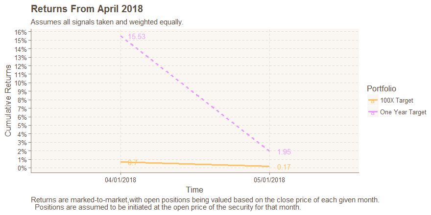

Please note that SixJupiter's premium signals are based on artificial intelligence algorithms that are optimized for total return only. As a result, performance can be substantially volatile. It is recommended that this aggressive portfolio based on SixJupiter's artificial intelligence only be pursued with funds allocated towards investment opportunities can tolerate higher risk and higher reward potentialities. For assistance in developing a full portfolio that balances pursuit of high risk opportunities with more conservative opportunities that can grow wealth over time, text "create a plan" to SixJupiter at 201.XXX.XXXX.
